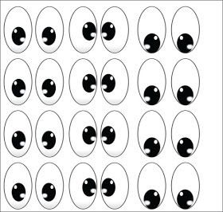

Fatos sobre o Stomatopoda
Quem sou eu?

Stomatopoda (ou estomatópode), chamados popularmente de tamarutacas ou de lacraias-do-mar no Brasil, é uma ordem de crustáceos marinhos da subclasse Hoplocarida, que agrupa cerca de 400 espécies, caracterizadas principalmente pela morfologia da segunda pata torácica, que é modificada em apêndice subquelado, lembrando uma pata de louva-a-deus.
Classificação Científica
- Nome Científico: Odontodactylus
- Reino: Animal
- Filo: Arthropoda
- Subfilo: Crustacea
- Classe: Hoplocarida
- Orden: Stomatopoda
Referência: Wikipedia
Cabecinha antenada tem as cores em sua visão!
Esses animais possuem o mais complexo sistema de visão de cores do mundo animal, pois enxergam 12 cores primárias, correspondentes aos 12 pigmentos distintos presentes em sua retina. Nossos olhos possuem três tipos desses receptores - que correspondem à luz azul, verde e vermelha -, que nos permitem perceber o espectro de cores que vemos. Os cães contam com apenas dois tipos de cones (verde e azul), e é por isso que eles vêm tons de azul, verde e um pouco de amarelo. Muitos anfíbios, répteis, aves e insetos possuem quatro tipo de cones, o que significa que espécies dessas classes conseguem ver cores que o nosso cérebro é incapaz de processar. Algumas espécies específicas de borboletas e possivelmente pombos possuem cinco cones de percepção de cor, o que aumenta ainda mais a quantidade de pigmentos que eles são capazes de perceber. O sistema de visão dos estomatópodes possui doze cones sensíveis à luz e outros quatro que filtram a luz (16 cones no total), o que lhes permite ver cores polarizadas e imagens multiespectrais. Como cada cone pode ver cerca de 100 cores, os estomatópodes são capazes de ver 1024 cores, ou seja, 1 septilhão de cores. Em comparação, o olho humano vê 106 cores, ou seja, 1 milhão de cores apenas. A visão dos estomatópodes é sensível à luz ultravioleta, mas ainda é desconhecido se ela pode distinguir a luz infravermelha.
Referência: Wikipedia
Curiosidades
 Os estomatópodes são predadores ativos que caçam presas com o
auxílio de um sentido de visão muito apurado e capaz de interpretar polarização no espectro
ultravioleta e infravermelho. Apresentam uma grande variação de tamanho, que pode ir de poucos milímetros até aproximadamente
40 cm nas espécies maiores. Eles vivem em fundo consolidado, lodoso ou ainda arenoso, onde cavam
seus buracos ou aproveitam-se dos orifícios deixados por outros animais para neles se instalar.
São animais exclusivamente carnívoros, alimentando-se de camarões, caranguejos,
moluscos, peixes e até mesmo outros da mesma ordem. O segundo par de patas, muito desenvolvido, é usado tanto
para atacar a presa como para se defender. O urópodo, quando aberto, também funciona para
defesa, como um escudo, fechando a galeria em que o animal esteja instalado. A fêmea desova no
local onde se abriga e, em caso de perigo, enrola os ovos como uma bola, prendendo-os junto ao
corpo até encontrar um abrigo mais protegido.
Também conhecidas como esquilas ou lagosta-boxeadora, espalhadas pelas costas dos
mares tropicais e subtropicais. Além das patas, elas apresentam uma silhueta característica, devido ao
grande comprimento aparentemente de seu abdómen. Os ovos ficam ligados por uma massa gelatinosa
que a mãe carrega contra o ventre até que eclodem, limpando-os sem parar.
Os estomatópodes são predadores ativos que caçam presas com o
auxílio de um sentido de visão muito apurado e capaz de interpretar polarização no espectro
ultravioleta e infravermelho. Apresentam uma grande variação de tamanho, que pode ir de poucos milímetros até aproximadamente
40 cm nas espécies maiores. Eles vivem em fundo consolidado, lodoso ou ainda arenoso, onde cavam
seus buracos ou aproveitam-se dos orifícios deixados por outros animais para neles se instalar.
São animais exclusivamente carnívoros, alimentando-se de camarões, caranguejos,
moluscos, peixes e até mesmo outros da mesma ordem. O segundo par de patas, muito desenvolvido, é usado tanto
para atacar a presa como para se defender. O urópodo, quando aberto, também funciona para
defesa, como um escudo, fechando a galeria em que o animal esteja instalado. A fêmea desova no
local onde se abriga e, em caso de perigo, enrola os ovos como uma bola, prendendo-os junto ao
corpo até encontrar um abrigo mais protegido.
Também conhecidas como esquilas ou lagosta-boxeadora, espalhadas pelas costas dos
mares tropicais e subtropicais. Além das patas, elas apresentam uma silhueta característica, devido ao
grande comprimento aparentemente de seu abdómen. Os ovos ficam ligados por uma massa gelatinosa
que a mãe carrega contra o ventre até que eclodem, limpando-os sem parar.
Referência: Wikipedia